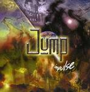

| Artist: | Jump |
| Title: | On Impulse |
| Label: | Cyclops CYCL 107 |
| Length(s): | 49 minutes |
| Year(s) of release: | 2002 |
| Month of review: | [10/2002] |
| 1) | Millionaire | 4.16 |
| 2) | Brave New World | 5.06 |
| 3) | Love Song Number 5 | 3.32 |
| 4) | Bethesda | 4.45 |
| 5) | Rise | 4.03 |
| 6) | Right Winger | 4.44 |
| 7) | Thom's New Clothes | 4.05 |
| 8) | Like A Drum | 5.55 |
| 9) | Wages Of Sin | 3.37 |
| 10) | Doctor Spin | 3.36 |
| 11) | Cruel To Be Kind | 5.26 |
Brave New World switches to an easier mode, but the American feel remains. Like its predecessor this World is carried by a nice riff.
Love Song Number 5 is quietly laid back, with guitar playing this time reminiscent of Clapton
Bethesda's quarrymen are told about over initially peaceful guitars, which as the track progresses explode into a pretty strong mid section. Nice.
Rise is a bit of a romantic one. Nicely flowing once again, but sort of lacking in identity.
The modern country like riff on which Right Winger is based, fits in pretty well with the association with rednecks.
Thom's New Clothes tells of Thom who apparently left his friends behind for the world. This track runs over into Like A Drum, which is far more spiky and features a nice drum roll.
Wages Of Sin is acoustic guitar with vocals. Ok.
Doctor Spin is a louder track, sort of the hardrocky side of Aerosmith, musically, being set apart by Jones' vocals.
Cruel To Be Kind is a fitting closer, nice-ish riffing, sparse instrumentation, a bit of stronger guitaring, and very much unoffensive.